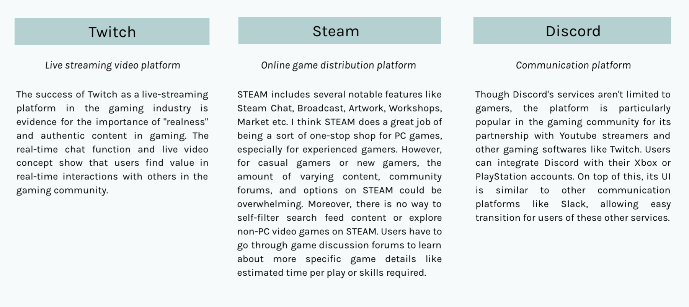
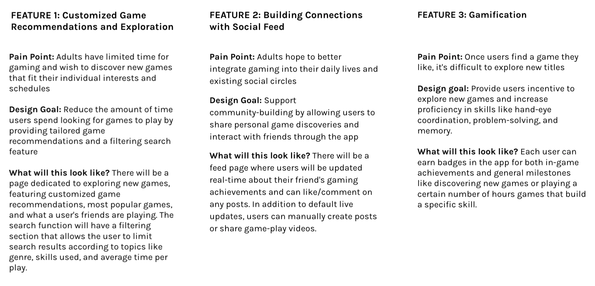
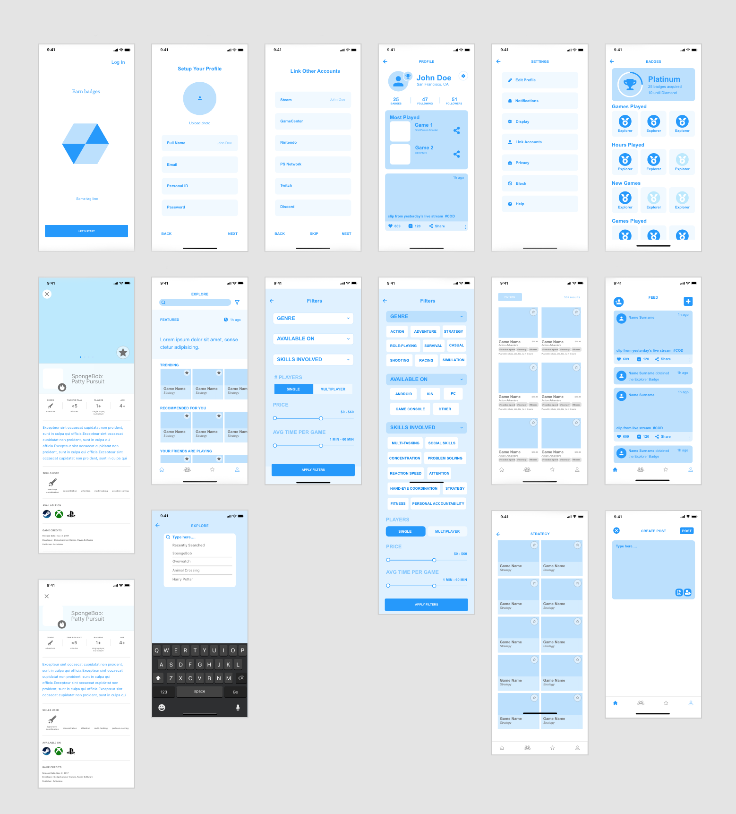

Adobe XD
3 designers
I worked with 2 other designers to design this app experience for the Adobe x Activision Creative Jam Challenge over the course of one weekend.
The Activision challenge prompt was as follows:
"Create a proficiency-focused app experience to inform new gamers about video games based on age-appropriateness and skills
such as read-ing, hand-eye coordination, fitness, personal account-ability, multi-tasking, problem-solving, memory, attention, concentration, social skills and more.
This third-party mobile app must help:
• Young kids learn and share new discoveries with their friends, or
• Parents find age-appropriate skills and games for their children, or
• Adults discover games that fit their interests and time allotted, or
• Senior citizens identify games to connect to friends and family"
Due to COVID-19, gaming traffic increased significantly. The surge of new gamers brought to light the sheer number of gaming choices in the market and the lack of a single resource to help gamers determine the games right for them and their situation. We kept this context in mind throughout the process, aiming to design a solution that would specifically solve the needs of this new influx of gamers.
GameScouts is the mobile app concept my teammates and I designed for this challenge, targeted towards adult gamers seeking to discover new games and better integrate gaming into their daily lives and social networks. The app is not intended to be a new storefront for smartphone game sales. Instead, it focuses on discovery of all types of video games (not limited to smartphone) based on a user's skill proficiency and individual situation. Additionally, GameScouts is designed to allow for sharing personal game achievements and building or maintaining connections through gaming.
We first discussed the target audience options, ultimately deciding to focus on building an app directed towards adults to help them "discover games that fit their interests and time allotted". This was the audience segment that we felt we could resonate the most with, given only a short period of time to research the user.
User needs we kept in mind:
- beginner-friendly interface for users who are trying out gaming for the first time
- gaming integration into existing social circle
- tailored recommendations that fit personal schedule
I did some research of the gaming-related platforms that already exist to gain a better understanding of the gaming industry and how other platforms already address gamer needs.
 My teammates and I brainstormed and discussed the key features that our app experience should have. Below is a description for the main features we decided on:
 At the end of Day 1, we started putting our ideas together into the initial wireframes:
 Before diving into higher-fidelity mock ups, my team discussed possible color themes. We settled on a dark mode, which we thought best fit our adult-gamer users, with yellow and pink accents for some pop of color. We wanted to maintain a sense of maturity to the design while making the app experience fun, like an arcade.
This was my first time doing any sort of ui ux challenge and working with prototyping software. I had a lot of fun learning about the design process, the ins and outs of Adobe XD, and the gaming industry! I realized how thorough planning and research early on can make a huge difference in the later stages of the design process when attention to detail plays a bigger role.
Due to the time constraint of the challenge, we didn't get to spend as much time as we would have liked for each step in the process. For our app, we relied on internet sources, but our product would've benefited from more extensive user surveys.
Working simultaneously with 2 other designers definitely showed me how important it is to keep consistency in mind from the start and develop working habits that fully utilize the tools in the software to help team members keep a consistent style. In future projects, I know to make better use of the components/assets feature in Adobe XD and create a thorough style guide!